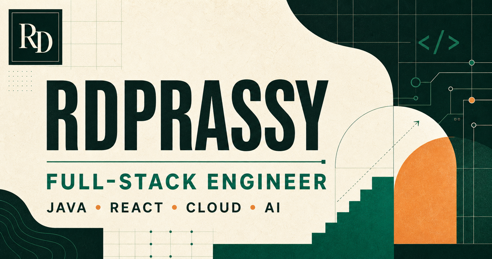

Understand before optimizing
The fastest solution is useful only when it solves the right problem. I start with users, constraints, failure modes, and the system around the code.
I’m Devi Prasad Choudhary Ratnala, an engineer from Ichapuram now based in Hyderabad. On the internet, in code contests, and across my projects, you’ll usually find me as rdprassy.

I like work that asks for both precision and imagination.
That has led me from algorithms and enterprise Java to React, cloud products, DevOps, and now AI engineering. Away from the screen, the same curiosity shows up in writing, rap, sport, juggling, cubing, and public speaking.
The fastest solution is useful only when it solves the right problem. I start with users, constraints, failure modes, and the system around the code.
Requirements, architecture, implementation, release, observability, incidents, and iteration are one connected responsibility.
New technology matters when it expands what a team can build. That is how React, cloud, Docker, and AI joined a Java-first foundation.
The parts outside engineering are not side notes. They influence how I reason, communicate, compete, and collaborate.
Experience as a Toastmasters executive committee member and a member of the Computer Society of India strengthened my public speaking and community mindset.
English, Hindi, Telugu, and Oriya—useful reminders that clarity depends on the audience, not only the message.
University and zonal competition made preparation, resilience, and team awareness practical habits.
The sports story ↗Stories, essays, rap lyrics, and a blog provide a place for ideas that do not belong in a pull request.
Explore writing ↗Two hobbies built around rhythm, pattern recognition, small corrections, and deliberate repetition.
This brand card brings together the engineering foundation—Java, React, cloud, and AI—and the rdprassy identity used across my public work.

Follow the route from school in Andhra Pradesh to product engineering in Hyderabad.